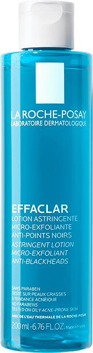

Effaclar
DUO+M
Rezultaty już po 8h1
Krem o potrójnym działaniu
przeciw:

Zaskórnikom
i wypryskom
Przebarwieniom
potrądzikowym
Nawrotom
niedoskonałości

Przełom
w nauce
o mikrobiomie
skóry
Zaburzony mikrobiom skóry powoduje rozwój i nasilenie objawów trądziku w tym namnożenie bakterii C.acnes typu IA1. Dlatego utrzymanie równowagi mikrobiomu jest kluczowe dla zdrowego wyglądu skóry.
W tym celu opracowano formułę wzbogaconą o składnik Phylobioma, działający przeciwko namnażaniu się bakterii C.acnes typu IA1, odpowiedzialnych za nasilenie się trądziku.
składniki aktywne
phylobioma

Pomaga łagodzić i redukować niedoskonałości poprzez zmniejszanie namnażania się batkerii C.acnes IA1.
Procerad™

Opatentowany ceramid przeciw przebarwieniom potrądzikowym.
NIACYNAMID

Pomaga zmniejszyć widoczność ciemnych plam i przebarwień. Redukuje sebum.
Mannoza
Wspomaga regenerację naskórka oraz nawilża skórę.
AQUA POSAE
FILIFORMIS

Pomaga trwale przywrócić równowagę skóry oraz działa kojąco.
skuteczność
Potwierdzona badaniami
Po 8
godzinach1
Niedoskonałości są zredukowane, pory mniej widoczne, a skóra
gładsza.
Po 4
tygodniach
-66% zaskórników2
-44% wyprysków3
-45% przebarwień potrądzikowych3
WG 93%
poprawia wygląd skóry4
WG 91%
krem łagodzi skórę4
zapewnia
24h
nawilzenie5
Skuteczna rutyna EFFACLAR przeciw niedoskonałościom
1

EFFACLAR
Oczyszczający żel
Usuwa zanieczyszczenia i nadmiar sebum, pozostawiając skórę czystą i odświeżoną.
2

EFFACLAR
Tonik złuszczający
Działa natychmiastowo, minimalizuje widoczność zaskórników, dodatkowo reguluje nadmiar sebum i działa ściągająco.
3

EFFACLAR
DUO+M
Pomaga szybko pozbyć się niedoskonałości: zaskórników i wyprysków, przeciwdziała nawrotom i zmniejsza ryzyko powstania przebarwień.
zobowiązania
la roche-posay

100% produktów przebadanych pod kątem wywołania alergii

tylko kluczowe składniki aktywne w optymalnym stężeniu
formuły odporne na upływ czasu

przeBadane na skórze bardzo wrażliwej